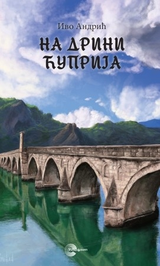

II Svetski rat provodi u Beogradu u izolaciji. Odbija da potpiše Apel srpskom narodu kojim se osuđuje otpor okupatoru. Iz moralnih razloga je odbio poziv kulturnih radnika, da se njegove pripovetke uključe u „Antologiju savremene srpske pripovetke” za vreme dok „narod pati i strada”
U tišini svoje iznajmljene sobe u Prizrenskoj ulici, piše prvo roman “Travnička hronika”, a krajem 1944. godine okončava i roman “Na Drini ćuprija”. Oba romana objaviće u Beogradu nekoliko meseci po završetku rata. Krajem 1945. godine u Sarajevu izlazi i roman “Gospođica”
Godine 1946. postaje predsednik Saveza književnika Jugoslavije.
Tokom 1946.
godine objavljuje „Pismo iz 1920. godine”.
Između 1947. i 1953. godine objavljuje
| Delo | Godina |
|---|---|
| „Priča o vezirovom slonu” | 1947. godine |
| nekoliko tekstova o Vuku Karadžiću i Njegošu | 1947. godina |
| „Priča o kmetu Simanu” | 1969. godine |
| „Bife Titanik” | 1950. godina |
| „Znakovi” | 1976. godina |
| „Na sunčanoj strani” | 1967. godina |
| „Na obali” | 1963. godina |
| „Pod Gradićem” | 1961. godina |
| „Zeko” | 1948. godina |
| „Aska i vuk” | 1960. godina |
| „Nemirna godina” | 1953. godina |
| „Lica” | 1960. godine |
Roman „Prokleta avlija” je štampao u Matici srpskoj 1954. godine.
Klikom na sliku pogledaj kako izgleda Andrićgrad